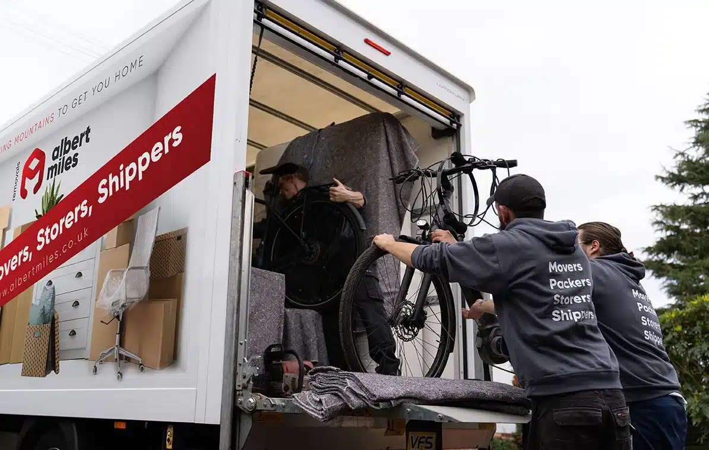

Mon–Fri 8am–6pm · Sat 8am–4pm
Free, no-obligation quotes
Call us now0121 679 2511
Get a Quote
Tell us a few details about your move and we'll get back to you with a fast, no-obligation price.
Free, no-obligation quotes · Mon–Fri 8am–6pm, Sat 8am–4pm
Albert Miles carries out house removals, packing, and storage across Bilston and the WV14 area. Every move starts with a free in-home survey and a fixed written quote — the price agreed before the day is the price on the invoice.
Looking for house removals in Bilston, man and van removals or a removals quote? We're the local removal company for Bilston — affordable house removals, fixed prices and a crew that knows every street.
Bilston has a varied housing stock. Streets close to the town centre are largely older terraces where access for a large vehicle can be tighter than on newer residential roads. Parking arrangements also vary, and some streets have permit zones or double yellow lines that affect where a van can stop.
Tell us your address at the survey stage. We will check the approach at both ends of your move and plan around any access restrictions. If a parking suspension permit is needed on your street, we can arrange it ahead of moving day.
Completion day delays are also more common than most buyers expect. If your keys are running late, see our guide on what happens when completion is delayed on moving day — it covers who to call, what the removal crew can do while you wait, and what happens if the van cannot unload that day.
Our house removal service covers moves of all sizes across Bilston, from older terraced homes near the town centre to semi-detached and newer estate properties on the outskirts. Every booking includes a surveyed, fixed price, and two-man and three-man crews are available depending on the volume of your move.
Our packing team works room by room using double-walled boxes and specialist wrapping for mirrors, glassware, and fragile items. A full-pack, partial-pack, or materials-only option is available depending on how much you want to handle yourself.
Learn MoreWardrobes, bed frames, and flat-pack furniture that will not pass safely through a doorway are dismantled before loading and rebuilt at your new address.
Learn MoreFor smaller Bilston moves or a single room of items, our man-and-van service gives you an insured, trained team at the right scale for the job.
Learn MoreIf your completion date and moving date do not match, our removal storage service holds your belongings securely and redelivers to your new address when you are ready. This also covers downsizing moves where you need time before deciding what goes where.
Learn MoreWe handle office removals for businesses moving within Bilston or relocating across the Black Country, including desks, filing, IT equipment, and office furniture.
Learn MoreMoving out of Bilston to another part of the UK? We provide fixed-price national removals with the same surveyed planning and careful handling.
Learn MoreAs well as moves within Bilston, we regularly cover Wolverhampton, Willenhall, Wednesbury, Sedgley, Tipton, and Dudley. For addresses just outside these areas, contact us and we will confirm coverage.
All crew members are in-house employees trained under our own programme. We carry full public liability cover and goods-in-transit insurance on every job. The price from the survey is the price on the day — there are no stair charges added afterwards, no fuel supplements, and no adjustments for jobs that run slightly longer than the estimate.
Read what previous customers say on our reviews page.
Yes — Bilston town centre, Bradley, Lanesfield, Monmore and the wider WV14 area are some of our most regular routes. We also cover the surrounding Black Country towns.
We recommend booking four to six weeks ahead, especially for Fridays and end-of-month dates. We do take last-minute and short-notice moves where availability allows — just call and ask.
We plan a buffer into your moving day and stay in touch with your solicitor where we can. If the van cannot unload on the day, our storage service holds your goods and we redeliver when you have the keys.
A two-bed home usually moves within a day; larger family homes can take a full day with loading and unloading. Your survey confirms a realistic timescale before you book.
In most cases, yes. We check the approach at the survey and can arrange parking suspension permits where your street requires one.
Yes — full-pack, partial-pack and materials-only options are available, and our team wraps fragile items room by room.
For legal and safety reasons we cannot carry flammable liquids, gas canisters, firearms, plants or perishable food. Valuables such as jewellery and important documents should travel with you.
Ready to move? Contact Albert Miles Removals for your free, no-obligation survey and quote.
We respond to all enquiries within 24 hours. Our friendly team is ready to answer your questions and arrange your free survey.